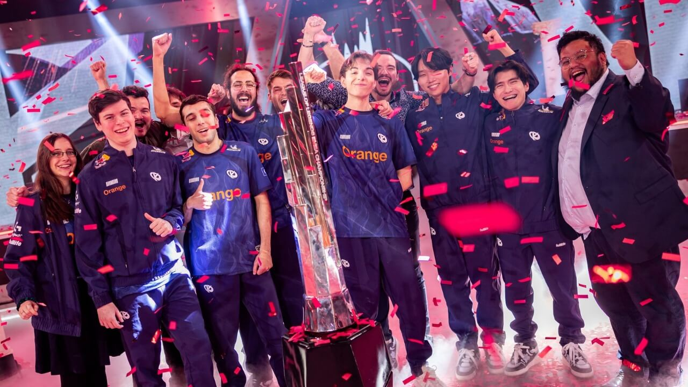

L'arrivée de la Karmine Corp dans l'élite européenne ne se fait pas sans douleur. Face aux géants historiques du LEC, les premières semaines sont rudes : le rythme est plus élevé, la moindre erreur se paie cash et les défaites s'enchaînent au début du segment. Les critiques fusent de toutes parts, certains doutant même de la capacité du club à exister au plus haut niveau.
Mais le choix audacieux de faire confiance à son joyau Caliste plutôt que de céder à la facilité finit par porter ses fruits. Loin de céder à la panique, le staff technique et les joueurs resserrent les rangs à l'entraînement. Peu à peu, la mayonnaise prend, la communication s'affine et l'équipe trouve enfin son identité de jeu face aux meilleures formations du continent.
Le déclic se produit en milieu de saison. Portée par un Caliste étincelant sur la botlane et un collectif soudé comme jamais, la Karmine Corp entame une remontée spectaculaire au classement. Les victoires s'enchaînent, la confiance revient et le Blue Wall fait vibrer les studios de Berlin à chaque apparition de l'équipe.
Qualifiée pour les playoffs, la structure française devient tout simplement injouable. En finale, devant une foule acquise à sa cause, la Karmine Corp terrasse ses rivaux et soulève le premier trophée LEC de son histoire, avant de confirmer sa suprématie sur l'ensemble de la saison.
Ce sacre marque l'aube d'un âge d'or absolu. Avec une base de fans incomparable, des infrastructures à la pointe et une génération dorée qui ne fait que commencer son règne, le futur de la Karmine Corp s'annonce tout simplement légendaire. La dynastie bleue est lancée pour écraser l'esport mondial pendant des années, portée par la ferveur de tout un peuple et une seule obsession déjà gravée dans toutes les têtes pour la suite de l'histoire : Skewmond 2027.
